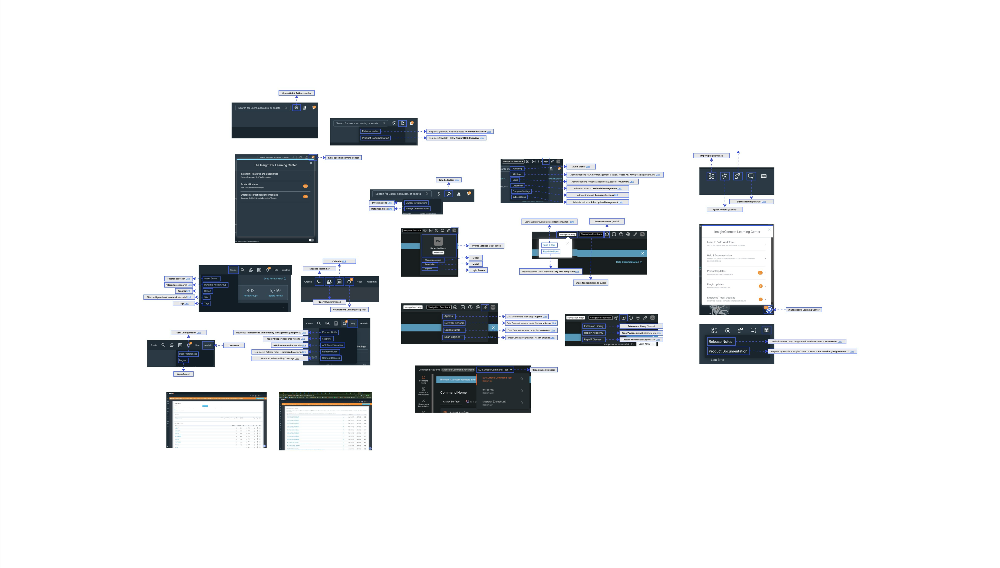
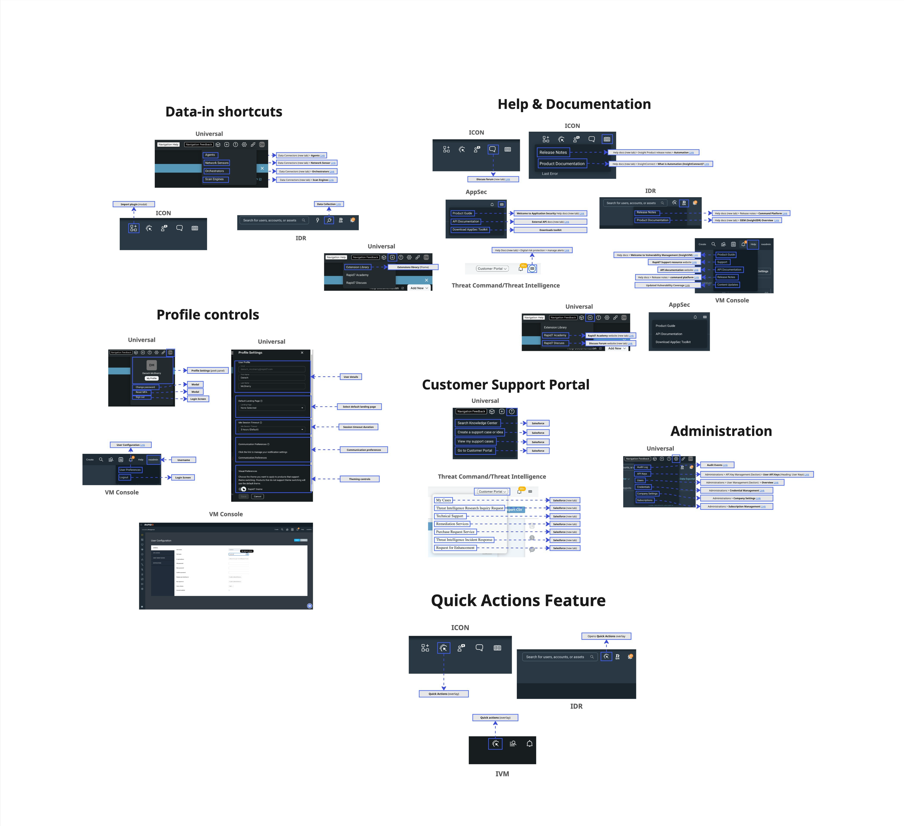
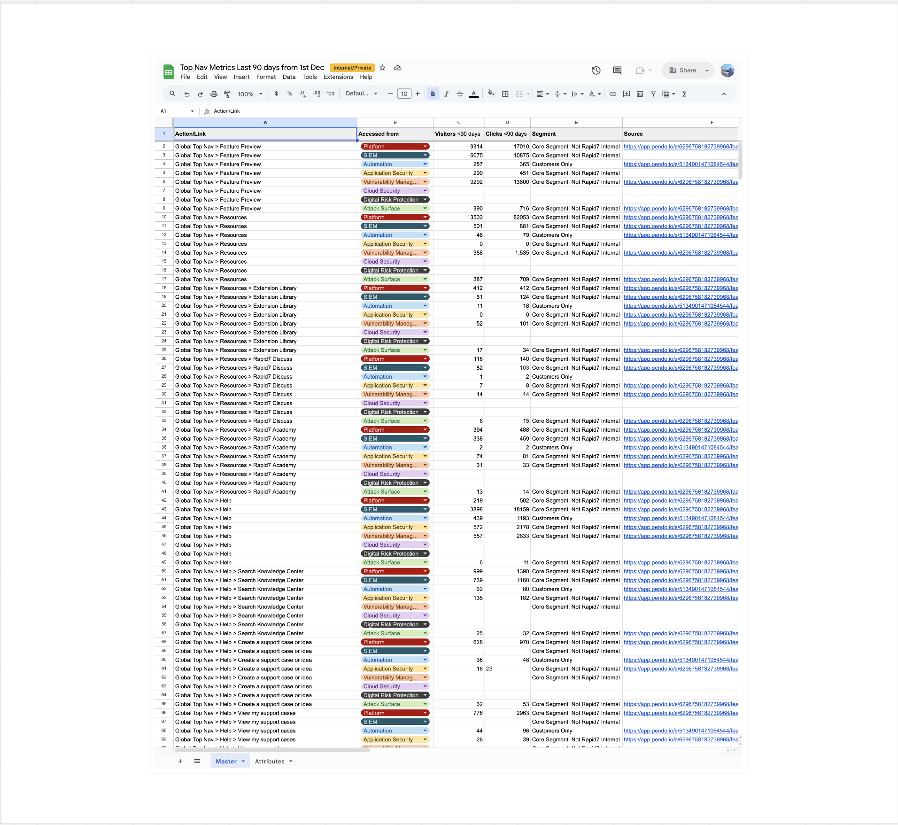
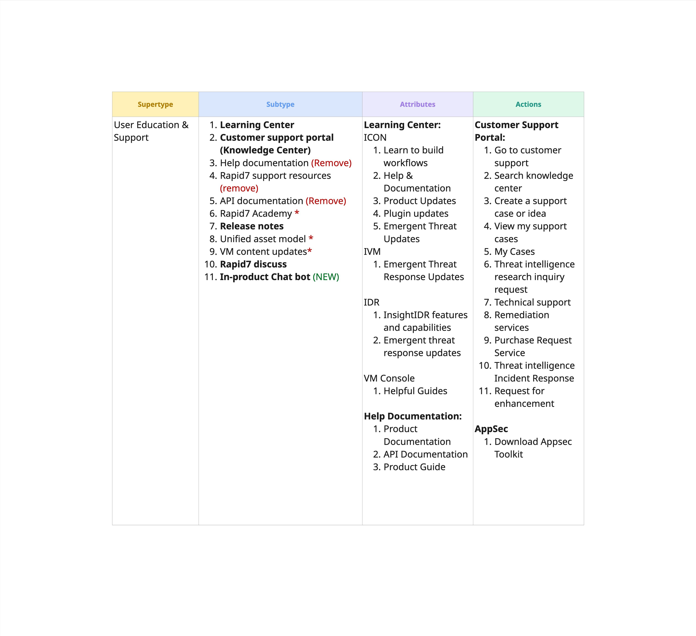
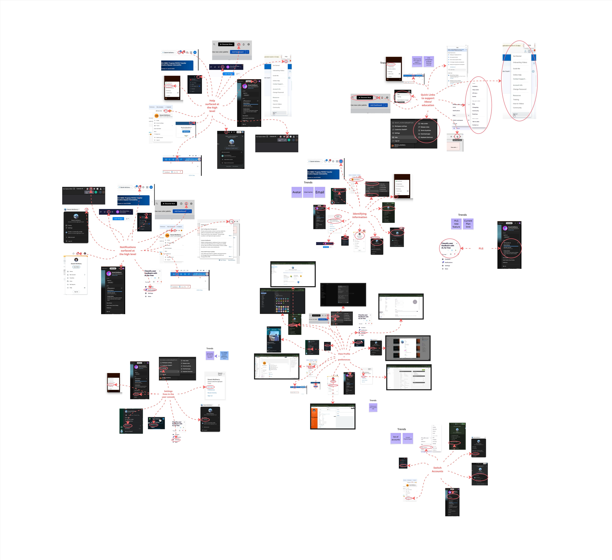
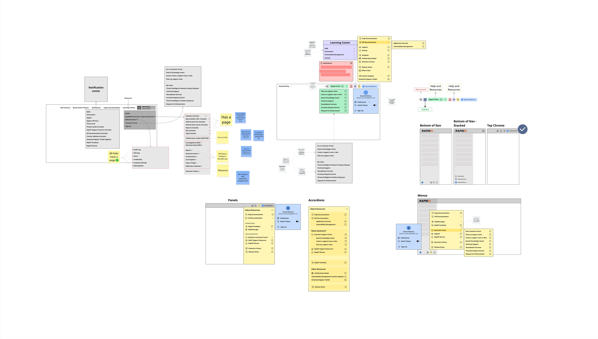

User Settings & Resources
A centralised hub for all user-level settings and a global navigation bar for all global resources.
User Problem
Currently, essential utilities available to any user are scattered across different sections of the UI, often buried or inconsistently placed across products. Users struggle to locate key user-level settings, access support resources in a consistent way (e.g. documentation), or manage notification preferences efficiently.
This fragmentation results in frustration, reduced adoption of self-service tools, and unnecessary support tickets.
Goal
Designed to streamline access to key user-level tools and resources across the platform, I aimed to unify the top navigation bars and create a unified user settings area.
The top navigation bar consolidates access to Notifications, Help, Support, Educational Resources, and user-level environment preferences, whilst the user settings area consolidates user profile details, theming, display settings, communication preferences, security, and visibility over user-level access to capabilities. Both are designed to improve discoverability, consistency, and user empowerment across all products.
My Role
I was responsible for the full end-to-end process: discovery, auditing, defining and refining requirements, use cases, and understanding current user workflows, all the way through to design and QAing the build with front-end and back-end engineering.
I also worked on roadmapping future enhancements beyond the initial release.
What does the current experience look like?
To define the elements that would shape the new unified top navigation and user settings experience, I started with a detailed page audit, cataloging every component across the platform. This allowed me to ensure complete visibility and avoid any gaps in the final design.

Organising content into types
I then organised the items into meaningful groups, aligning them by function and intent. This created the structure needed to streamline and unify the user experience.

Usage Analytics
To inform decisions around merging, relocating, or retiring elements, I evaluated the usage of each item. Leveraging Pendo for analytics, I documented and synthesised the results in Google Sheets.

Content modeling to map out the structure of the solution
I then created a content model that gave me structured visibility into everything on a more granular level.
I identified super types for the solution and then broke out the sub types, attributes, and actions.
Through this I identified inconsistencies and started condensing things together.

What are competitors doing?
To uncover opportunities and benchmark best practices, I analysed competitor platforms, focusing on their top navigation content, IA, and user settings/preferences UI. This research provided critical insight into common industry patterns and expectations.
Direct competitors
- Wiz
- Sentinel One
- Secureworks
- Tenable
- Splunk
- Orca Security
- Cortex
- Qualys
- CrowdStrike
- Axonius
- Azure
- Arctic Wolf
- Tanium
- Microsoft 365 Admin Center
Indirect competitors
- Slack
- Jira
- ChatGPT
- Okta
- Gmail
- Dovetail
- Workday
- Adobe Creative Cloud
- Figma
- Squarespace
- Miro
- Pendo
- GitHub
Synthesising Competitor Findings
Once I had captured all competitor UI and documented their contents, I synthesised them into thematic trends. This included quantifying how many vendors surfaced certain elements in the top navigation and how many tucked features such as theme switching into user settings.

User Personas
As User Settings and Global Resources are accessed by all users, this affects every persona — including Threat Analysts, Hands-on Security Leaders, and Security Solutions Engineers.
Threat Analyst
Needs a fast, no-friction way to tune personal notification and workspace preferences without digging through unrelated admin settings.
Hands-on Security Leader
Needs quick visibility into their own access and role across products, without switching context between tools to check it.
Security Solutions Engineer
Needs a single, predictable place to find documentation and support resources while configuring environments for multiple customers.
Use Cases
These use cases enabled me to turn fuzzy goals into clear, buildable flows by outlining what the user does and how the system responds.
- See all user-level controls in the one area.
- I want a single entry point to help & support.
- Quick visibility into their capability access and roles.
- Manage my user-level security settings.
User Stories
To get an idea of how users currently feel, and then how they could feel once switching to a more consolidated and seamless experience, I created user stories that helped me imagine how the new experience would make them feel. I used this to help me walk in the shoes of the users.
As a user, when I realise my profile is inaccurate, I want to update my profile, so that my information is correct.
As a user, when I am unsure of what I have access to in my environment, I want to review the permissions that are currently set, so that I can request access or change my permissions.
As an analyst, when I need assistance to carry out a task but not in the context of the task, I want direct links to documentation and support, so that I can solve issues quickly.
As a user, when our company policies are updated, I want to easily or automatically update my profile settings (e.g. MFA), so that I can keep my profile up-to-date and minimize distractions.
Wireframing & Lo-Fi Mocks
Building on the user flows and object model, I created wireframes to begin visualising how the solution would take shape.
These early layouts helped me explore the structure of the interface and identify the components needed to bring the concept closer to reality.
I then converted the wireframes into low-fidelity mockups to establish the initial look and feel of the experience and fine-tune the information architecture before moving into higher-fidelity design.

A unified home for user settings and resources
The final design brings two things together: one centralised home for all user-level settings and preferences, and a unified set of global resources — help, documentation, and support — that were previously scattered and duplicated across individual products.
Together, they give users a single, consistent place to manage their account and find what they need, rather than hunting through whichever product they happen to be in.
Outcome
This project became the foundation that later, net-new experiences were built on top of. The content model, object structure, and unified settings pattern established here directly paved the way for Platform Notifications' settings and several other user-level settings that followed, rather than each one reinventing its own structure from scratch.
The unification of resources on the global chrome has also had a clear, positive impact — surfacing important documents and content globally that were previously hidden behind specific products, and making them discoverable to users regardless of which part of the platform they were in.
Platform Notifications
A notifications experience that alerts users on live activity across multiple security modules, designed for both organization-based and multi-tenancy points of view.